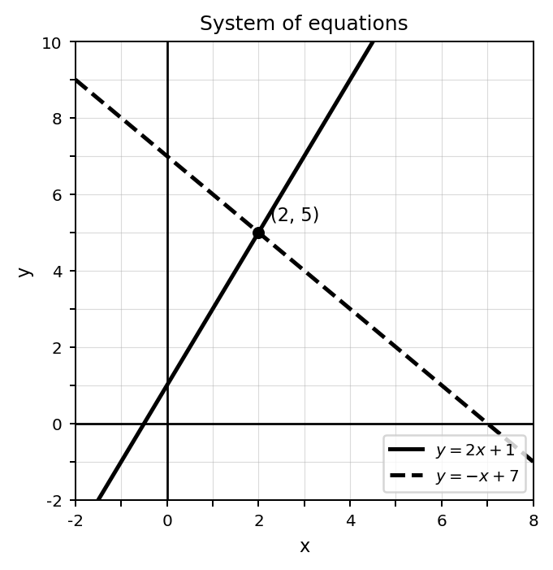
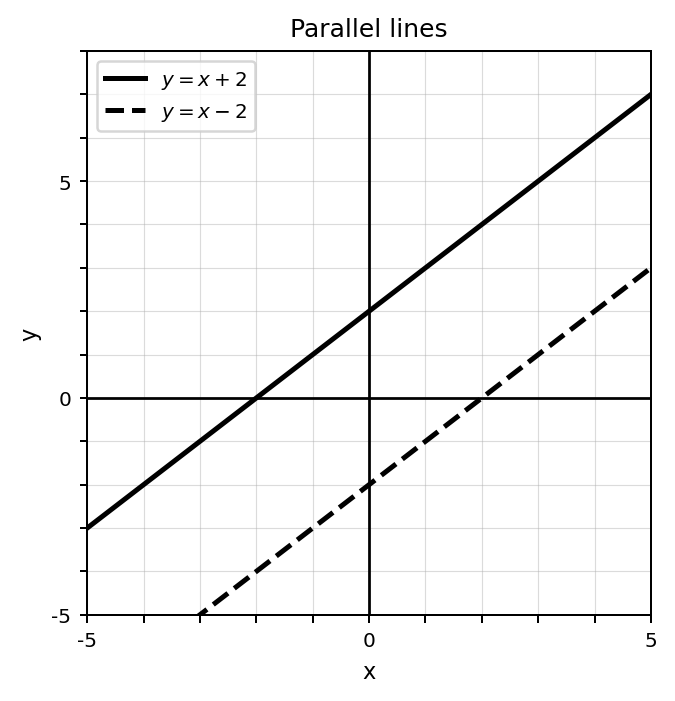
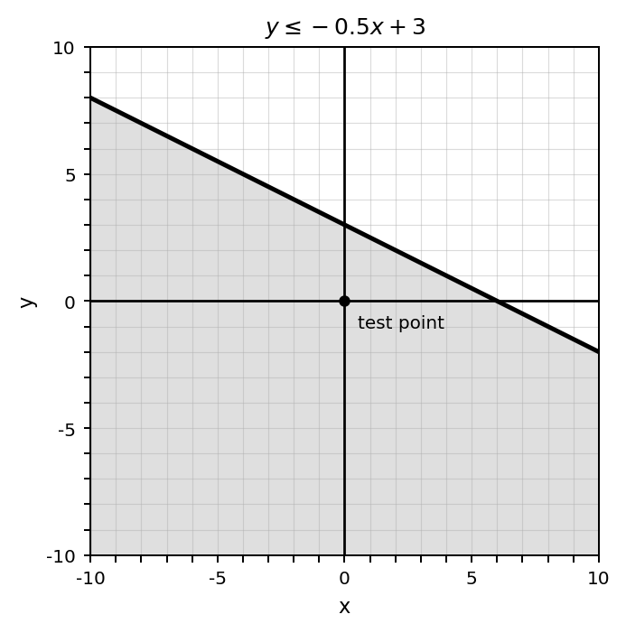
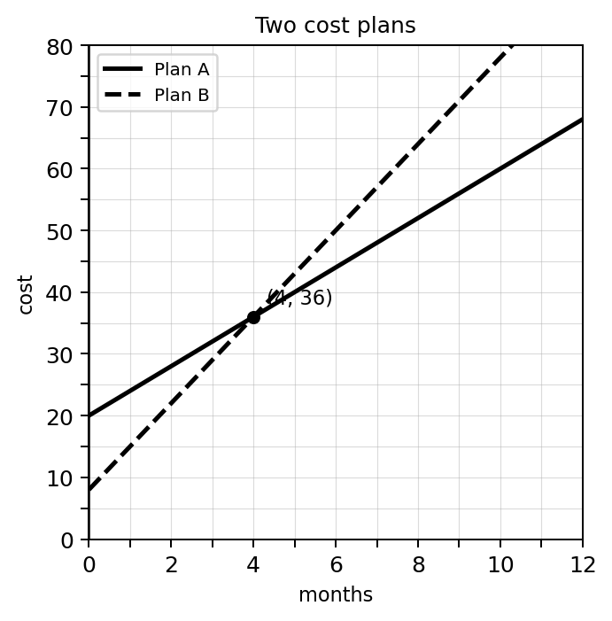
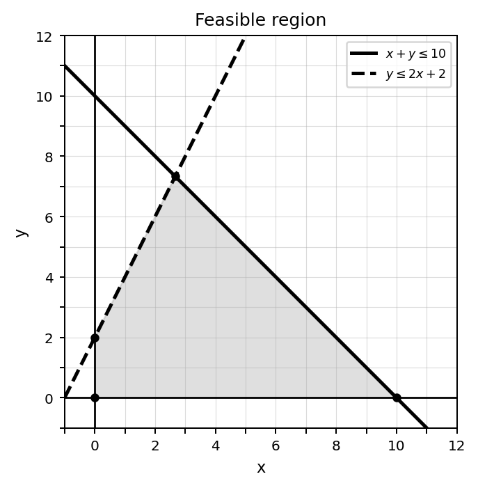
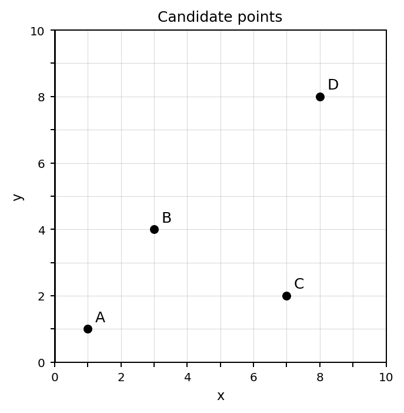

Students will solve and interpret systems of equations and inequalities in order to model situations, analyze constraints, and justify solutions using equations, graphs, tables, and contexts.
| Rung | I Can Statement | DOK | Level |
|---|---|---|---|
| 8 | I can analyze systems and constraints in real-world situations, justify conclusions using equations, graphs, tables, and contexts, and evaluate whether solutions are reasonable. | DOK 4 | Above |
| 7 | I can create, compare, and revise systems of equations or inequalities, then defend which representations and solution methods best support a decision. | DOK 4 | Above |
| 6 | I can analyze solution behavior, constraints, and feasible regions to explain one solution, no solution, infinitely many solutions, and valid solution sets. | DOK 3 | Essential |
| 5 | I can justify solution methods, verify ordered pairs, critique reasoning, and connect algebraic solutions to graphs and contexts. | DOK 3 | Essential |
| 4 | I can write and solve systems from graphs, equations, tables, and situations using graphing, substitution, or elimination. | DOK 2 | Essential |
| 3 | I can graph linear inequalities, solve routine systems, use test points, and interpret basic solution sets. | DOK 2 | Essential |
| 2 | I can identify solution types, ordered-pair solutions, boundary lines, shaded regions, and system vocabulary. | DOK 1 | Essential |
| 1 | I can recognize systems of equations, systems of inequalities, graphs, tables, and contexts as ways to represent relationships and constraints. | DOK 1 | Essential |
Format: 3–5 minute warm-up, vocabulary check, graph identification, ordered-pair check, or exit ticket
Purpose: Check whether students can recognize systems, identify solution behavior from graphs, verify ordered pairs, use system vocabulary, and identify boundary-line or shading features.
Use the graph. Estimate the ordered pair where the two lines intersect.

Identify the solution type shown by the graph below: one solution, no solution, or infinitely many solutions.

Which equation is already solved for $y$?
Check whether $(3,5)$ satisfies the equation $y=2x-1$.
For the inequality $y\le 2x+1$, should the boundary line be solid or dashed?
For the inequality $y>-x+3$, should the boundary line be solid or dashed?
Use the graph. Is $(0,0)$ in the shaded solution region?

What does the shaded region of a linear inequality graph represent?
Format: Exit ticket, partner check, whiteboard response, mini-quiz, graphing task, or short written task
Purpose: Check whether students can solve routine systems, graph inequalities, write systems from straightforward situations, and connect graphical and algebraic solution methods.
Solve the system by graphing or elimination.
| $y=2x+1$ |
| $y=-x+7$ |
Solve the system using substitution.
| $y=x+4$ |
| $2x+y=10$ |
Solve the system using elimination.
| $3x+2y=16$ |
| $x-2y=0$ |
A system has solution $(4,36)$ in the two cost plans graph. Interpret the solution in context.

Adult tickets cost $8 each and student tickets cost $5 each. A total of 30 tickets were sold for $195.
Write a system of equations using $a$ for adult tickets and $s$ for student tickets.
Graph the inequality $y\le -x+6$. Describe which side of the boundary line should be shaded.
Use the feasible region. List two points that appear to satisfy all constraints.

Determine whether each point is feasible for the constraints $x\ge 0$, $y\ge 0$, and $x+y\le 10$.
Format: Constructed response, strategy comparison, error analysis, graph interpretation, constraint analysis, or written explanation
Purpose: Check whether students can justify methods, analyze solution behavior, verify solutions, critique misconceptions, and connect systems or inequalities to context.
A student says:
The solution to a system is only where the two lines look close together.
Critique the statement and explain the correct meaning of a system solution.
Compare the systems below. Explain how their graphs would differ.
| $y=2x+1$ |
| $y=-x+7$ |
and
| $y=x+2$ |
| $y=x-2$ |
A student solves by substitution:
$$y=x+5,\quad y=3x-1$$
and writes $x+5=3x-1$, then concludes $x=3$. Verify the solution and finish the ordered pair.
A student writes the ticket system as:
$$a+s=195$$
$$8a+5s=30$$
Explain the mistake and write the correct system.
Explain why a dashed boundary line is used for $y>2x-3$ but a solid boundary line is used for $y\le 2x-3$.
Use the feasible region graph to explain why a point on one boundary line may still fail another constraint.
Four candidate points are shown. Suppose the constraints are $x\ge 0$, $y\ge 0$, $x+y\le 10$, and $y\le 2x+2$. Which points appear feasible? Justify your answer.

Choose the most efficient method: graphing, substitution, or elimination. Justify your choice.
| $2x+3y=18$ |
| $4x-3y=6$ |
Format: Brief performance task, modeling task, critique-and-revise task, design task, or decision-making task
Purpose: Check whether students can transfer systems and constraints to unfamiliar situations, design models, compare options, critique assumptions, and justify decisions.
Create a real-world situation that can be represented by the system below. Define the variables and interpret the solution.
| $x+y=40$ |
| $12x+8y=400$ |
Design two different cost plans that would have the same total cost after 6 months. Write equations for both plans and explain the intersection.
Create a system with no solution. Then explain how the equations and graph would show that there is no solution.
Create a system with infinitely many solutions. Explain how you know every solution to one equation is also a solution to the other.
Design a set of three constraints for a school event involving time, cost, or supplies. Write the inequalities and describe what a feasible solution means.
A student claims that any point inside the first quadrant is feasible for a constraint situation. Create a counterexample and explain your reasoning.
Create a compare-and-recommend problem involving two options. Solve using a system or graph and justify which option is better under different conditions.
Critique and revise this model: A club sells adult tickets and student tickets. The student wrote $a+s=250$ to represent the money collected. Explain what is wrong, then write a complete system that could model a ticket situation.